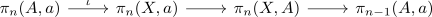

long exact sequence of relative homotopy
Proposition
Let $(X,A,a)$ be a pointed pair of spaces Then there exists a long exact sequence

where
- $\iota$ is the inclusion $\iota: A \hookrightarrow X$
- $\pi: (X,a) \rightarrow (X,A)$ is ??? the inclusion of based maps.
- the boundary map is given by restricting to $S^{n-1}$ and restricting to $A$ as image.
\begin{align*}
[(D^n, S^{n-1}), (X,A) ] \mapsto [S^{n-1}, A]
\end{align*}
Proof
welldefined
group homomorphism
homotopy
exactness
at $\pi_{n-1}(A,a)$
sketch: follows precisely from trivial element in a homotopy group and extension